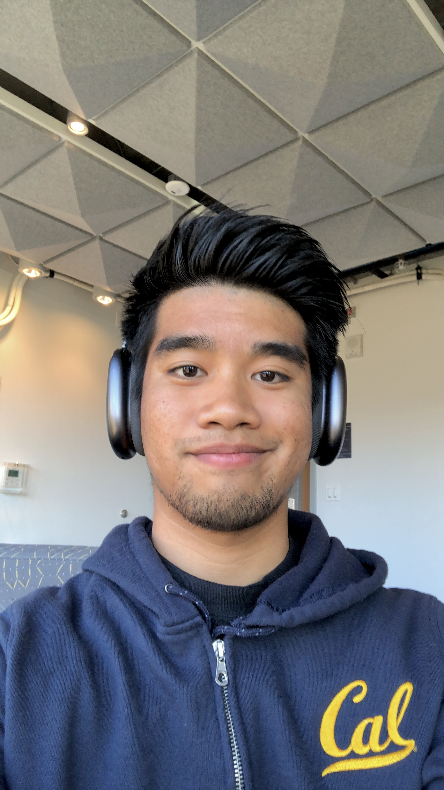

Muiz Zafri Bin Mustamir
Economics and Data Science | 2nd Year
Hey there, My name is Muiz and I'm a proud international student from Malaysia! At Berkeley I busy myself with club
involvements particularly in organising cultural events with the Malaysian Student's Assocation and also
being the project manager of a consulting club on campus. To fix my ocassional stints of homesickness, I've learnt to cook over the past
year through short recipe snippets on Tiktok and IG Reels. My favourite dishes so far is a mean Malaysian Chicken Curry and a hearty
Hainanese Chicken Rice.
Favourite Restaurants in Berkeley:
- Racha's Cafe
- The Noodle
- Marugame Udon

- Question 1: One thing I learned from the article is to be more inquisitive when visiting websites or apps. Asking questions like "Why is the toggle structured in
a certain way?" and "Why is the information separated in such a way?" is a great way to start thinking about the intention behind the design. By making this more apparent,
I hope to gain a better understanding of design objectives when creating a website
- Question 2: My favourite part of the article was the observations made after the Twitter Gif. The way that the information was deconstructed by the author made me question
the purpose of the designer's intentions. Bolding the likes and retweets emphasizes the content while less important information like the date and time of post remain faded"
- Question 3: "Next time you're sitting in a Lyft or waiting on a friend, open up an app and think through the reasons why the designers chose to design it that way"
- Question 4: 7/10